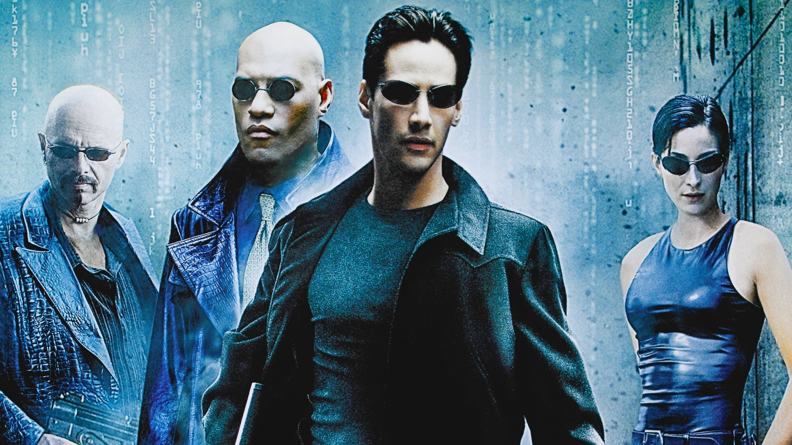
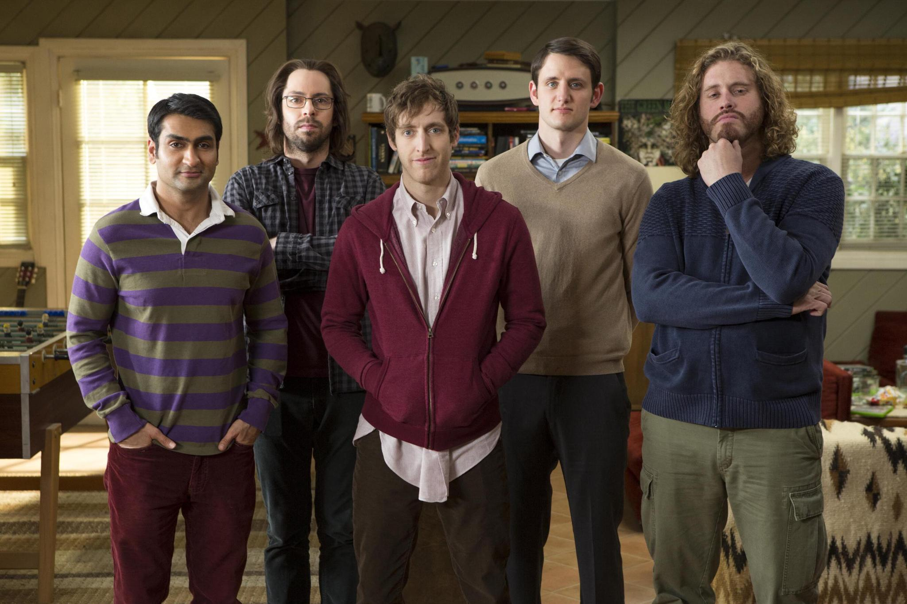
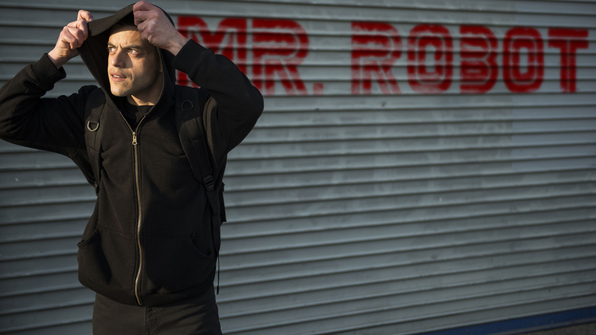
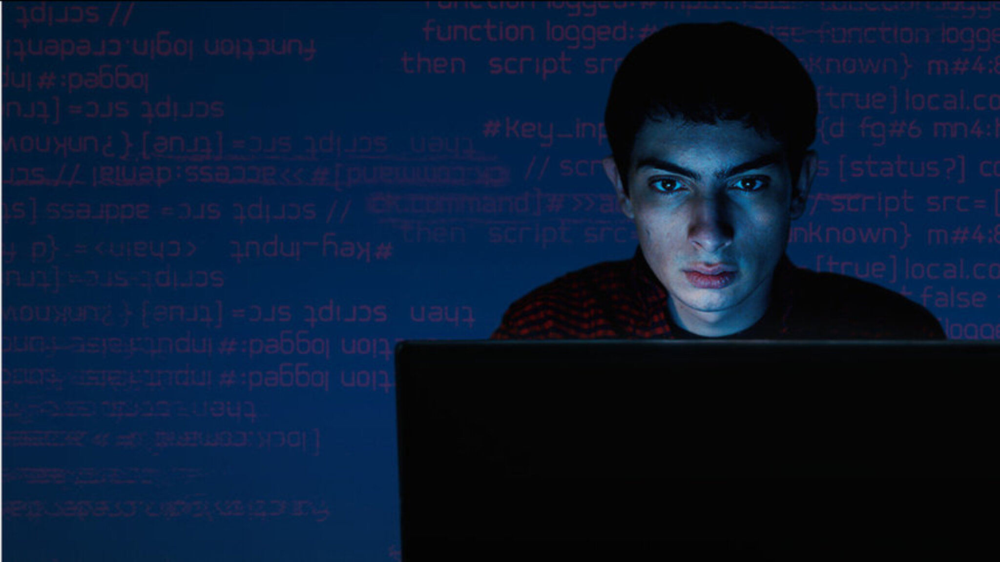

1. Матрица (1999)
Культовый фильм, который вышел в 1999 году. Его сняли братья Вачовски, и он стал настоящим прорывом в мире кино. Сюжет такой: у нас есть главный герой — Томас Андерсон, который работает обычным офисным работником днём и хакером по имени Нео ночью. Всё начинается с того, что он получает странные сообщения. И вот, однажды он встречает загадочную девушку по имени Тринити, которая помогает ему понять, что мир вокруг него — это всего лишь симуляция, созданная машинами.

3. Кремниевая долина (2014–2019)
Это просто невероятный сериал! Он вышел на HBO и рассказывает о группе программистов, которые пытаются запустить свой стартап в самом сердце технологической революции — в Кремниевой долине. Если ты ещё не смотрел «Кремниевую долину», обязательно посмотри! Это отличный способ провести время и посмеяться над теми же проблемами, с которыми сталкиваются многие стартаперы.

4. Мистер Робот (2015–2019)
Триллер о хакере, который становится частью революционной группы, стремящейся уничтожить корпорацию. Сериал затрагивает темы кибербезопасности и социальной справедливости. Сериал завоевал множество наград и стал культовым среди поклонников технологий и триллеров. Если ты любишь умные драмы с элементами триллера и актуальными темами, «Мистер Робот» обязательно стоит посмотреть!

5. Киберсталкер (2019–2021)
Это довольно интересный французский сериал, который вышел в 2021 году. Он рассказывает о Лукасe, молодом парне, который поступает в одну из лучших инженерных школ. Сначала всё кажется крутым, но быстро становится ясно, что популярные ребята там — настоящие хулиганы. Они начинают его унижать, и это доводит Лукаса до отчаяния. Так вот, вместо того чтобы просто смириться с унижениями, он решает отомстить. Лукас, который также известен как Люкс, начинает взламывать телефоны и компьютеры своих обидчиков. Представляешь? Он получает доступ к их личной информации и использует это против них. Это как игра в кошки-мышки, только ставки гораздо выше.

2. Социальная сеть (2010)
Биографическая драма о создании Facebook и судебных разбирательствах его основателя Марка Цукерберга. Сюжет начинается в 2003 году, когда Марк Цукерберг, которого играет Джесси Айзенберг, — студент Гарварда, — переживает разрыв с девушкой. Раздосадованный и подогретый алкоголем, он решает отомстить и создает сайт под названием Facemash. Это что-то вроде рейтинга привлекательности студенток — он взламывает университетские базы данных и выкладывает фотографии девушек, чтобы студенты могли голосовать за самую красивую. Сайт становится вирусным, но его быстро закрывают. И вот после этого Марк начинает работать над Facebook. О н собирает команду, включая своего друга Эдуардо Саверина (Эндрю Гарфилд), который помогает ему с финансами. Фильм показывает, как быстро Facebook растет и как Марк становится всё более одержимым успехом.